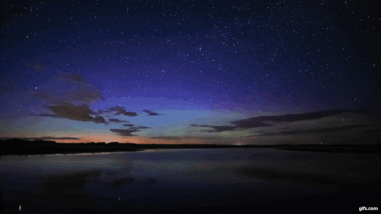

DUMBY:
I don’t think we are bad. I think we are all good, except Tuppy.
LORD DARLINGTON:
No, we are all in the gutter, but some of us are looking at the stars.
DUMBY:
We are all in the gutter, but some of us are looking at the stars? Upon my word, you are very romantic tonight, Darlington.
CECIL GRAHAM:
Too romantic! You must be in love. Who is the girl?
‘We are all in the gutter, but some of us are looking at the stars’
this oft-quoted line from Oscar Wilde was not spoken by Wilde during conversation,
as so many of his witty lines were.
Instead, ‘we are all in the gutter, but some of us are looking at the stars’
is uttered by one of Wilde’s characters in his play,
Lady Windermere’s Fan.
But what is the meaning of this pithy and strangely beautiful line?
And this early theatrical success
for Wilde has more than its fair share of quips,
many of which are still well-known:
‘I can resist everything except temptation’,
‘a man who knows the price of everything
and the value of nothing’
(a definition of a cynic),
and ‘experience is the name
everyone gives to their mistakes’
But the most famous is also the most romantic:
Lord Darlington’s
‘we are all in the gutter,
but some of us are looking at the stars.’
We are all in the gutter,
but some of us are looking at the stars
-Oscar Wilde
